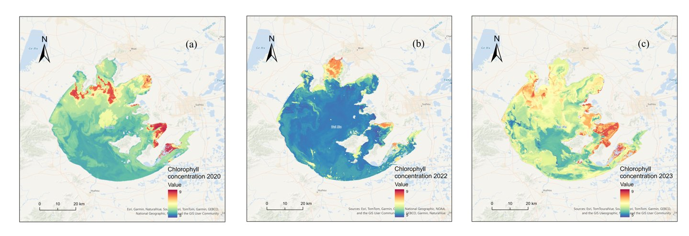

Chlorophyll-a Retrieval in Lake Taihu from Multi-Satellite Data Fusion
Lake Taihu, China's third-largest freshwater lake, is frequently affected by harmful algal blooms. Harmonized GF-1 WFV, Landsat 8/9 OLI and Sentinel-2 MSI imagery into Landsat-equivalent remote sensing reflectance using spectral band adjustment functions calibrated with in situ hyperspectral Rrs data, then trained a Random Forest to map chlorophyll-a across the lake on the same date in 2020, 2022 and 2023. The model reached R² = 0.810 (RMSE 2.04 µg/L, MAE 1.53 µg/L).